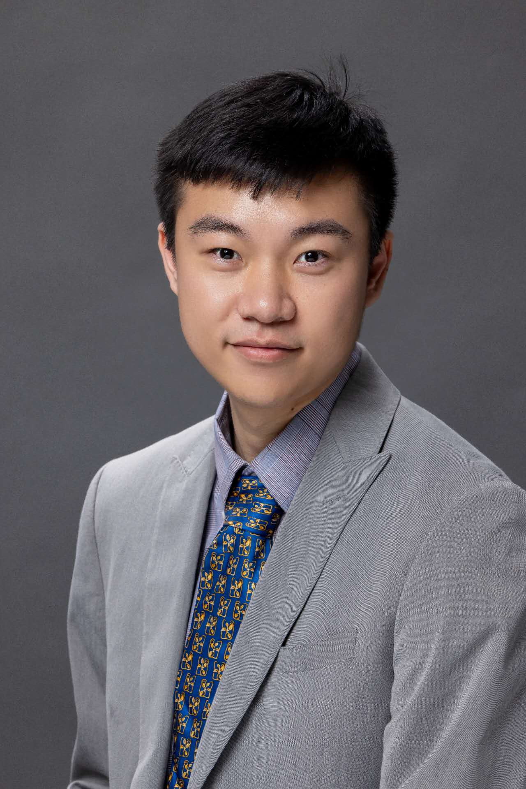
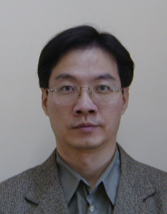

| Objectives | Scope | Dates | Organizers | CFP |
Bio-inspired intelligence fused with evolutionary computation is a powerful branch of computational intelligence, increasingly significant for robotics. Autonomous robotics and the vehicle industry, both essential to our economy and society, are set to benefit from these hybrid approaches. Evolutionary computation, enhanced by biologically inspired intelligence techniques, such as artificial immune systems, reinforcement learning with evolutionary strategies, and evolutionary multi-objective optimization draws insights from natural systems to address real-world challenges in robotics and vehicle systems.
Research and development in bio-inspired systems integrated with evolutionary computation for robotic applications have grown worldwide. Recently, evolutionary computation techniques have been successfully integrated with bio-inspired algorithms, encompassing emerging areas like bio-inspired evolutionary robotics, brain-inspired neuro-evolution robotics, and swarm intelligence-based robotics. These approaches are applied to various computational aspects, such as machine vision, pattern recognition, motion control, motion planning, sensor-motor coordination, and learning in biological systems for robot and vehicle systems.
This special session aims to showcase and advance emerging research, development, and applications in bio-inspired algorithms within evolutionary computation for robotics and autonomous systems, including autonomous robots, unmanned underwater vehicles, and unmanned aerial vehicles. We invite contributions that explore new techniques and applications in this dynamic and evolving field.
Original research contributions are invited in the field of biologically inspired intelligence and evolutionary computation for robotics and autonomous systems. Submissions to this special session should focus on theoretical advancements or/and novel applications of bio-inspired algorithms and evolutionary computation for robotic and autonomous systems.
Specific topics for the special session include but are not limited to:
|  |
Dr. Tingjun Lei , Assistant Professor, School of Electrical Engineering and Computer Science, University of North Dakota, ND, USA. Email: Tingjun.Lei@UND.edu
Dr. Tingjun Lei received his Ph.D. degree in electrical and computer engineering with the Department of Electrical and Computer Engineering, Mississippi State University, Mississippi State, MS, USA., in 2023, his M.S. degree in electrical and computer engineering from the New York Institute of Technology, Old Westbury, NY, USA, in 2016, and the B.S. degree in intelligent transportation engineering from Shanghai Maritime University, Shanghai, China, in 2014. Dr. Tingjun Lei is currently an Assistant Professor with the School of Electrical Engineering and Computer Science, University of North Dakota, Grand Forks, ND, USA. Dr. Lei received the Best Paper Award in 2022 International Conference on Swarm Intelligence and American Society for Engineering Education (2024 ASEE ECE Division). His two papers have been selected and featured as cover articles on the Intelligence and Robotics Journal. He received the ECE Best Graduate Researcher Award from the Department of Electrical and Computer Engineering, Mississippi State University in 2023. He received the Research Travel Award from Bagley College of Engineering, Mississippi State University in 2023. He won six oral and poster presentation awards at multiple conferences. Dr. Lei serves as Editorial Board Member of Intelligence and Robotics. He is the Publicity Chair of CVPRAI 2025 and Session Chair of IEEE CARS 2024. Dr. Lei has served on the technical program committee for numerous international conferences, such as IEEE-CEC, IEEE-IJCNN, ICSI, and PRIS, etc. His research interests include robotics and autonomous systems, human robot interaction, deep learning, intelligent transportation systems, and evolutionary computation.
Dr. Chaomin Luo, Associate Professor, Department of Electrical and Computer Engineering, Mississippi State University, USA. Email: Chaomin.Luo@ece.msstate.edu
Dr. Chaomin Luo received his Ph.D. from the Department of Electrical and Computer Engineering at the University of Waterloo, Canada, in 2008. He earned his M.Sc. in Engineering Systems and Computing from the University of Guelph, Canada, and his B.Eng. in Electrical Engineering from Southeast University, Nanjing, China. He is currently an Associate Professor in the Department of Electrical and Computer Engineering at Mississippi State University, USA. His research interests include Computational Intelligence and Neural Networks, Intelligent Systems, Robotics and Automation, and Embedded Systems. Dr. Luo also has extensive industry experience, having worked as a Research Engineer, Hardware Designer, and Director of the Embedded Systems and Intelligent Instrument Lab. Dr. Luo has demonstrated significant leadership both nationally and internationally in his research field. He served as the General Co-Chair of the inaugural IEEE International Workshop on Computational Intelligence in Smart Technologies (IEEE-CIST 2015) and was the Journal Special Issues Chair for the IEEE 2016 International Conference on Smart Technologies (IEEE-SmarTech) in Cleveland, OH, USA. He has also held key roles in other major IEEE conferences, including Program Co-Chair for the 2018 IEEE International Conference on Information and Automation and Publicity Chair for the 2011 IEEE International Conference on Automation and Logistics. In addition, Dr. Luo contributed as a Conference Committee Member for the 2012 IEEE International Conference on Information and Automation, as well as the International Symposium on Biomedical Engineering, and once again served as Publicity Chair for the 2012 IEEE International Conference on Automation and Logistics. He has also taken on leadership roles within IEEE’s SEM chapter, including Chair and Vice Chair of the Computational Intelligence Chapter and Chair of the Education Committee. Dr. Luo’s editorial contributions include serving on the Editorial Boards of the Journal of Industrial Electronics and Applications. He is also an Associate Editor for the International Journal of Robotics and Automation, the International Journal of Swarm Intelligence Research (IJSIR) and the IEEE Transactions on Cognitive and Developmental Systems. Dr. Luo has organized and chaired numerous special sessions on topics such as Intelligent Vehicle Systems and Bio-inspired Intelligence at prestigious IEEE conferences, including WCCI, IEEE-IJCNN, and IEEE-SSCI. He has an extensive publication record in leading journals and conferences, such as IEEE Transactions on Neural Networks, IEEE Transactions on SMC, IEEE Transactions on Cybernetics, IEEE-ICRA, and IEEE-IROS. Additionally, he served as a panelist for the U.S. Department of Defense's NDSEG Fellowship program (2015-2017) and for the NSF GRFP Panelist program in 2017. He received the Best Paper Award in the IEEE International Conference on Information and Automation (IEEE ICIA2017), and the Best Paper Award in the American Society for Engineering Education (ASEE) Conference 2024. He is Associate Editor in 2019 IEEE/RSJ International Conference on Intelligent Robots and Systems (IROS 2019). He is Co-Chair in the 2020 IEEE Symposium Series on Computational Intelligence.
|  |
Dr. Gene Eu Jan, Ph.D., Chair Professor, Department of Computer Science, Asia University, Email: Gejan@mail.ntpu.edu.tw
Dr. Gene Eu Jan received his B.S. degree in Electrical Engineering and E.M.B.A. from National Taiwan University, as well as M.S. and Ph.D. degrees in Electrical Engineering from the University of Maryland. Previously, he served as Professor and Chair of the Institute of Electrical Engineering at National Taipei University and as an Associate Professor in the Department of Computer Science and Navigation at National Taiwan Ocean University. He also held the position of President at Tainan National University of the Arts. Currently, he is a Chair Professor in the Department of Computer Science at Asia University in Taichung, Taiwan. His research interests include computational intelligence, intelligent systems, robotics, and applied machine learning.
Dr. Zhuming Bi, Professor of Mechanical Engineering, Department of Civil and Mechanical Engineering, Purdue University Fort Wayne, IN, USA. Email: biz@pfw.edu
Dr. Zhuming Bi received the Ph.D. degrees from the Harbin Institute of Technology, Harbin, China, and the University of Saskatchewan, Saskatoon, SK, Canada, in 1994 and 2002, respectively. He has international work experience at National Institute of Standards and Technology (NIST) (2016), Northern Ireland Technology Centre (NITC) (2008), National Research Council Canada (2003-2007), City University of Hong Kong (1997), and Nanjing University of Science and Technology (1994-1998). He is currently a professor of mechanical engineering at Purdue University Fort Wayne, Fort Wayne, IN, USA. His recent interests include robotics, mechatronics, Internet of Things (IoT), digital manufacturing, automatic robotic processing, and enterprise information systems.